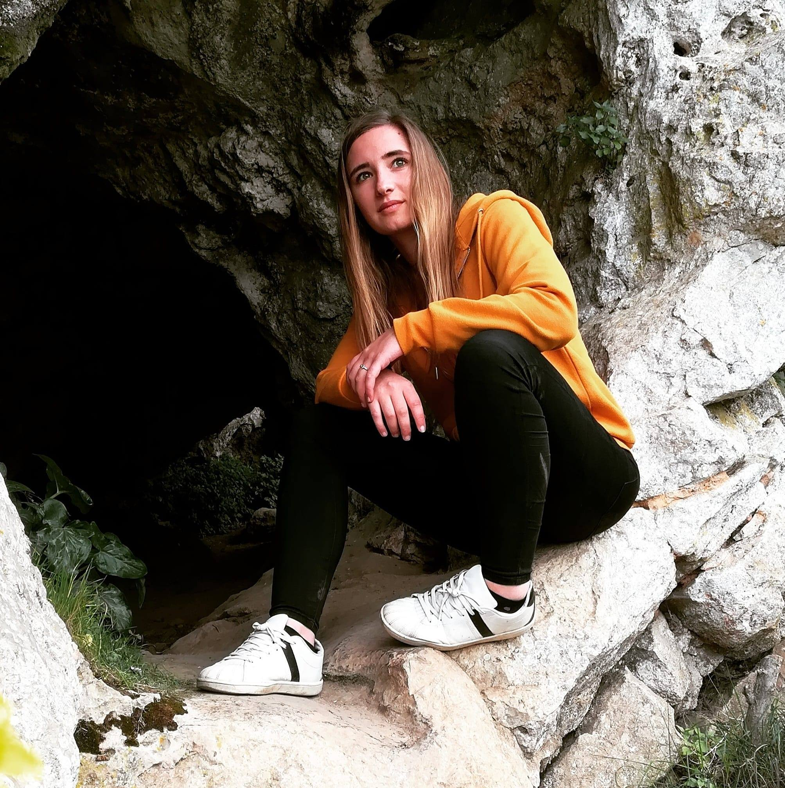

Guinéenne de nationalité, diplômée en Licence Informatique à l’université Toulouse 3 Paul Sabatier et actuellement en master IM(Ingénierie Métier) à l’université Toulouse 1 Capitole. Je suis passionnée par le développement informatique et les nouvelles technologies.
Hui Fang
Chinoise,titulaire d'une licence en Economie. Hui a pris les cours préparatoires l'année dernière à l'université Toulouse 1 Capitole. Actuellement en Master IM(Ingénierie Métier) dans la même université. Elle espère acquérir et développer la capacité d'analyser les données.
Sall Baba
Mauritanien, et titulaire d'une double licence en économie et gestion et en économie et société.et Actuellement en Master 1 Ingénierie Métier à l'université Toulouse 1 Capitole.Ceci afin de diversifier et de développer ces compétences en informatique et gestion.
Joohyun Ann
Sud-coréenne et titulaire d'une double licence en Commerce internationale et langue française, Joohyun est actuellement étudiante en Master MIAGE parcours Ingénierie Métier à l'université Toulouse 1 Capitole. Ceci afin d'acquérir des compétences pour le métier de PM dans des projets numériques.
Dylan Cailler
Venant de l'Ariége et faisant ses études à Toulouse, Dylan est récemment diplômé de la licence Administration Economique et Social (AES) mention Economie et Social discernée par l'Universite UT1 Capitole il entreprend de faire le MASTER IM dans la même université afin d'espérer devenir un Data Analyst.

Lisa DE SMET
D'origine Belge, j'ai obtenu, l'an dernier, après deux années de droit, ma licence MIASHS TI, à UT1 Capitole Toulouse.
Aujourd'hui je suis en MASTER MIAGE IM dans l'optique d'acquérir des compétences dans le domaine de l'informatique et du decisionnel.